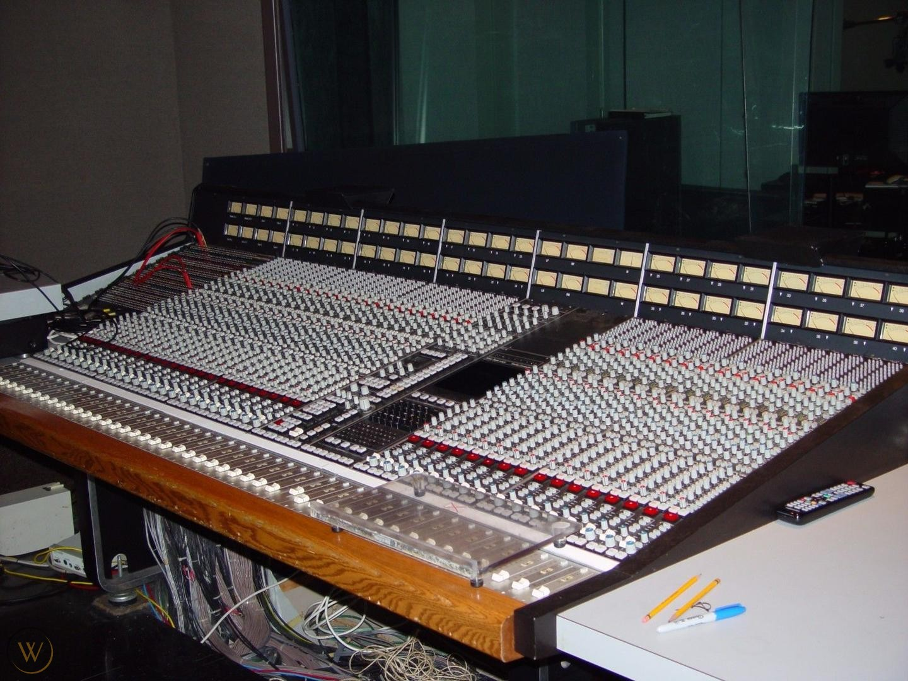
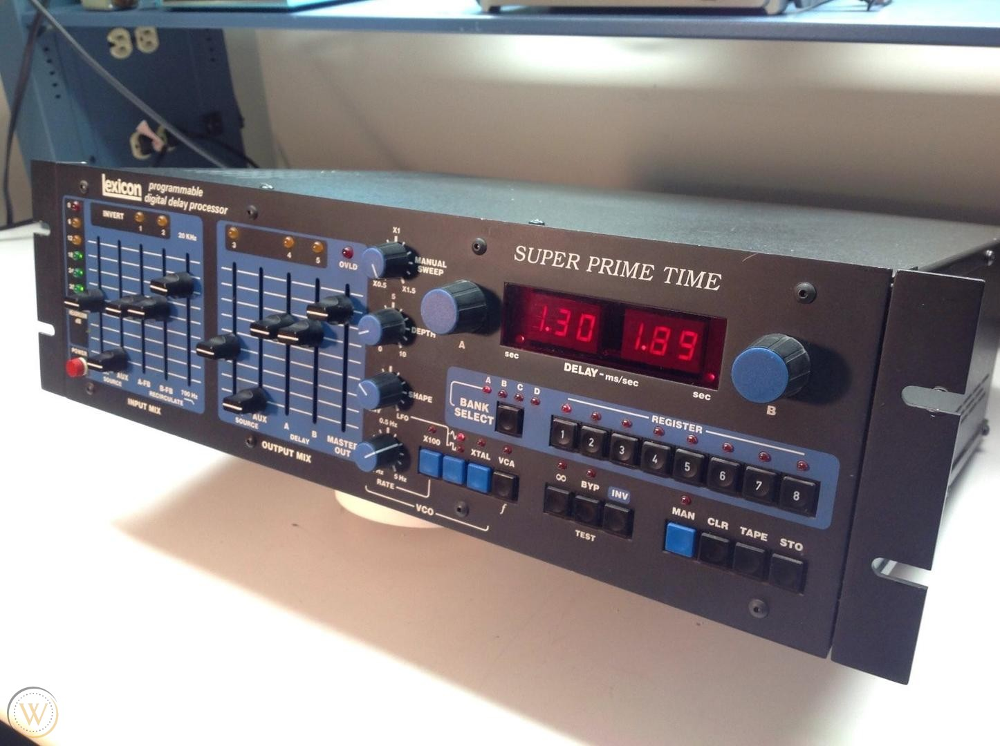
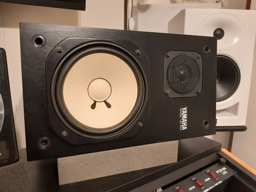

Nuesto Equipamento
le brindamos la mejor calidad y fidelidad a los musicos con una amplia gama de equipos.
- CONSOLA ASLL-K 440 TI del año 1980
- Uptown ( P & G ) , customizada por BRENT AVERILL (Vintage).
- OBSIDIAN STEREO BUS COMPRESSOR
- APOGEE AD 1000 Y DA 1000
- COMPRESOR FOCUSRITE L6L-62
- LEXICON SUPER PRIME TIME
- E6 EZEQ LINZ-72
- MONITORES TAD
- OLLAS ESSEN DEL 72
- INTERFAZ FOCUSRITE SCARLET 9I9-800
- YAMAHA NS10M
- MONITORES AKG-100
- CONSOLA API – 32 canales de grabación x 64 canales de mezcla
- AMPLIA GAMA DE MICROFONOS
- AMPLIA GAMA DE AMPLIFICADORES
- GUITARRAS Y BAJOS FENDER - GIBSON
- API 550 B (3) API 560 B (2) API 550 A (2)
- Máquina MCI 24 CANALES c / AUTOLOCATOR III
- AVALON DIRECT BOX
- FAIRCHILD 670 stereo compresor limiter
- CALREC SOUNDFIELD IV (1)
- ECHOPLEX ROLAND SDE 3000
- PROTOOLS HD3 192HZ
- SENNHEISSER 421
- LANGEVIN mono equalizer year 1962 vintage
- BEYER FOSTEX AKG headphones
- PIANO STEINWAY & SONS DE 1/2 Cola de
- EMT 140 TS tubes (2)
- SPACE ECHO
- NEVE 1084 (4) vintage originales
consolas y monitor


